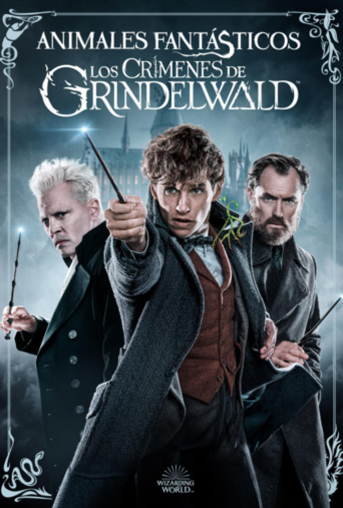

Peliculas
Harry Potter y la piedra filosofal

Un día cerca del undécimo cumpleaños de Harry Potter, un chico huérfano, comienza a percibir extraños acontecimientos a su alrededor, los cuales alcanzan su punto máximo cuando unas cartas enviadas desde el Colegio Hogwarts de Magia y Hechicería llegan a la casa donde vive con sus tíos. Las cartas destapa los secretos que sus tíos le escondieron durante toda su vida: sus padres fueron magos y un mago tenebroso –Lord Voldemort– los asesinó en una época de guerra encarnizada, por lo que Harry es un mago de la misma manera y deberá comenzar sus estudios como tal en esa escuela. Para este fin, Dumbledore, le muestra la fortuna monetaria que le dejaron sus padres.
Escoltado por el guardabosques del colegio, Rubeus Hagrid, Harry parte rumbo al colegio de magos donde se esconde un antiguo objeto legendario, la piedra filosofal. Al lado de los que se volverían sus mejores amigos, Ron Weasley y Hermione Granger, Harry intenta convencer a sus profesores de que la piedra puede ser robada por el profesor Severus Snape, lo cual es negado por los últimos pues afirman que se encuentra en un lugar seguro y protegido. Durante las aventuras, el protagonista averigua más sobre su verdadero pasado.
Harry Potter y la cámara secreta

Un elfo doméstico se presenta en la casa de los tíos de Harry antes de comenzar su segundo año en la escuela; la criatura le advierte que no regrese al colegio ya que hay un complot para causar caos y muertes donde Harry se verá involucrado. La Cámara Secreta es abierta y tras ello varios alumnos sufren atentados sin que el responsable de dichos ataques pueda ser identificado, pero los docentes saben que la situación no es nueva y que está relacionada con la leyenda fundacional del mismo instituto. Harry, junto a sus amigos Hermione y Ron, se enfrenta a un misterio que pone en peligro la continuidad del instituto Hogwarts –un hecho similar que había sucedido 50 años atrás– y descubre más sobre el pasado de Lord Voldemort gracias a su diario personal.
Harry Potter y el prisionero de Azkaban

Poco antes de iniciar el tercer año del protagonista en el Colegio Hogwarts, un peligroso y supuesto homicida –Sirius Black– se fuga de la cárcel de Azkaban dejando preocupado al Ministerio de Magia y a la comunidad mágica, pues es el primero que lo logra. Arthur Weasley le advierte a Harry que el prófugo fue un seguidor de Voldemort durante el auge de su poder y que posiblemente se ha escapado para encontrar al causante del eclipse de su maestro, es decir, Harry. Como medida de seguridad, las autoridades del mundo mágico ordenan a los dementores –centinelas de la prisión de Azkaban que te quitan tus recuerdos felices– que vigilen los alrededores del colegio. Sin embargo, gracias a que Harry ha vivido momentos difíciles estos se irán contra Harry, por lo que Black usará sus habilidades animágicas, para lograr penetrar las defensas e introducirse en la escuela, por lo que su encuentro con Harry se hace inevitable. Durante su encuentro, figuran Remus Lupin, Severus Snape y Peter Pettigrew como parte crucial del pasado de los padres de Harry. En su encuentro Harry se encontrará con el horrible pasado de sus padres.
Harry Potter y el cáliz de fuego

Durante el verano, el Campeonato Mundial de Quidditch es interrumpido cuando los mortífagos, antiguos seguidores de Lord Voldemort, atacan la sede del torneo. Este incidente señala que el poder de Voldemort no se ha extinguido totalmente y, sumado a las pesadillas de Harry, parecen presagiar que su regreso es inminente. Hogwarts se convierte en la sede del Torneo de los Tres Magos, una competencia en la que se enfrentan tres escuelas de magia europeas (Beauxbatons, Durmstrang y Hogwarts) y en la que un representante de cada escuela deberá completar tres pruebas durante todo el año. Sin embargo, el torneo es saboteado por Barty Crouch Jr. y Harry termina inmerso en la contienda aún cuando las reglas establecen que carece de la edad suficiente (17 años) y lo tradicional es que participen solo tres magos. La última prueba termina como trampa para permitir el resurgimiento de Lord Voldemort y, consecuentemente, para que Harry se enfrente con él y muera el otro participante de Hogwarts
Harry Potter y la Orden del Fénix

El Ministerio de Magia rehúsa creer que Voldemort ha reaparecido, pues teme esa situación y emprende una campaña de desprestigio contra Albus Dumbledore, Harry y todos los que sostienen lo contrario a la verdad oficial. Por lo que Albus Dumbledore crea la "Orden del Fénix" tomando medidas protectoras contra Lord Voldemort y tratando de convencer a Cornelius Fudge para que acepte verdad de que Lord Voldemort ha vuelto. Aparece por primera vez Luna Lovegood, una excéntrica estudiante. El ministro designa a Dolores Umbridge, una trabajadora del Ministerio, como inspectora y nueva profesora para que intervenga en Hogwarts y evite cualquier pensamiento subversivo respecto de no aceptar la versión del Ministerio sobre el tema Voldemort. Umbridge cambia drásticamente las normas del colegio, instalando cuadros de decretos en una pared, convirtiéndose finalmente en la directora del mismo, sustituyendo a Dumbledore y causando que Harry y sus amigos realicen entrenamientos secretos para prepararse con una inevitable y próxima lucha, llamando al equipo "Ejército de Dumbledore". A finales de año, Harry, Ron, Hermione, Neville, Ginny y Luna viajan a Londres, sede del Ministerio de Magia, pues una visión de Harry le indica que Voldemort está torturando a Sirius Black y posiblemente lo mate. La lucha termina con la muerte de Black, con una batalla entre Voldemort y Dumbledore, y con la aceptación del ministerio mágico de la reaparición del Señor Tenebroso. Además, es ahí cuando a Harry le es revelada una profecía que concierne a él y Voldemort.
Harry Potter y el misterio del príncipe

En medio de los desastres que azotan a Inglaterra por ataques de Voldemort y sus mortífagos hacia muggles, Harry y sus compañeros vuelven a Hogwarts para cursar su sexto año de estudios. Se le asigna a Draco Malfoy una misión por parte de Voldemort y Snape jura protegerlo y realizar la misión del chico si este es incapaz de realizarla. A pesar de las medidas de seguridad que han convertido al colegio en una fortaleza para evitar cualquier entrometimiento de fuerzas malignas, algunos estudiantes son víctimas de ataques inexplicables. Asimismo, Harry encuentra un libro de pociones cuyo propietario es el «príncipe mestizo», que lo ayuda durante todo el año. Dumbledore y el protagonista exploran el pasado de Lord Voldemort mediante recuerdos que el director ha recolectado pues desea preparar al muchacho para la batalla final. Gracias a una memoria de Horace Slughorn, a Dumbledore y Harry se les revela que Voldemort dividió su alma en siete objetos llamados «horrocruxes» con el objetivo de esquivar a la muerte. Después de una intensa búsqueda de alguno de estos últimos, Dumbledore es asesinado por Snape, poniendo en duda la verdadera lealtad del asesino y entregando el poder máximo a manos de Voldemort para su segundo intento de dominio del mundo mágico. Snape le cuenta a Harry que el es el Príncipe Mestizo.
Harry Potter y las reliquias de la Muerte: parte 1

Harry Potter, Hermione Granger y Ron Weasley se ven obligados a realizar un peligroso viaje lejos de los terrenos de Hogwarts, que los llevará alrededor del país en busca de los restantes horrocruxes, objetos siniestros que contienen fragmentos del alma de Lord Voldemort. Se supone que este sería su último año en Hogwarts, pero el colapso del Ministerio de Magia y el reciente ascenso de Voldemort al poder les impide asistir.
Harry Potter y las reliquias de la Muerte: parte 2

Tras varios meses en busca de Horrocruxes y escondiéndose de los mortífagos por Inglaterra, Harry, Ron y Hermione regresan al Colegio Hogwarts al descubrir la existencia de otra parte del alma de Voldemort, allí Harry descubre que todo lo sucedido desde que fue entregado a sus tíos Dursley fue nada menos que un plan de Albus Dumbledore en donde cuidaba a Harry para su inminente final pensado y que la muerte de Albus Dumbledore fue planeado por el mismo Dumbledore y la verdadera rivalidad entre el padre de Harry (James Potter) y Severus Snape, pero en medio de su búsqueda de horrocruxes se desata la batalla final.
Animales fantásticos y dónde encontrarlos

Newt Scamander, un mago de Inglaterra, viaja a Estados Unidos. Al hacer una parada en Nueva York, su maleta, la que contiene animales del mundo mágico, se pierde y todos los animales que había dentro de ella se escapan. Newt convence a Jacob Kowalski, un Nomago (persona no mágica), de que lo ayude a encontrar a los animales que se escaparon de su maleta. Gracias a la ayuda de este y otras dos personas más, logra recuperar a todas las criaturas mágicas. Paralelo a todo esto, un Obscurus (una fuerza oscura y destructiva que los niños mágicos descubren para ocultar sus poderes), al parecer está desatado en la ciudad y estaría causando destrucción a su paso. Newt encuentra al Obscurus -después de ya haber recuperado a sus criaturas mágicas- y se enfrasca en una lucha con él, pero cuando parece que lo han vencido, Scamander nota que un pequeño fragmento de Obscurus huye, lo que parece indicar que este no ha desaparecido por completo. Se descubre que el que desencadenó este obscurus fue Gellert Grindelwald, intentando exponer a la comunidad mágica a los No-Mag. Finalmente, deciden borrarle la memoria de lo ocurrido recientemente a todos los neoyorquinos a través de su thunderbird. Newt regresa a Europa a escribir su libro.
Animales fantásticos: Los crímenes de Grindelwald
Grindelwald ha hecho un escape dramático desde la custodia de la MACUSA. El villano Grindelwald ha estado ocupado reuniendo más seguidores para su causa - elevar a los magos sobre los seres no mágicos. El único que podría ser capaz de detenerlo es el mago que una vez se llamó su más querido amigo, Albus Dumbledore. Pero Dumbledore necesitará ayuda del mago que ya ha frustrado a Grindelwald una vez antes, su antiguo estudiante Newt Scamander. A Newt una vez más se le unirán Queenie y Tina Goldstein en la siguiente película, así como su amigo No-Maj. Sin embargo, la misión en contra de Grindelwald "pondrá a prueba sus lealtades" mientras el mundo mágico se vuelve más dividido y peligroso.